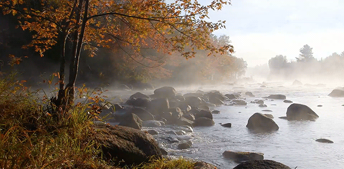
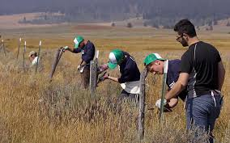
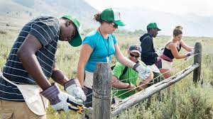
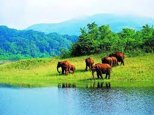
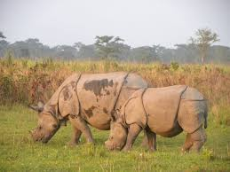
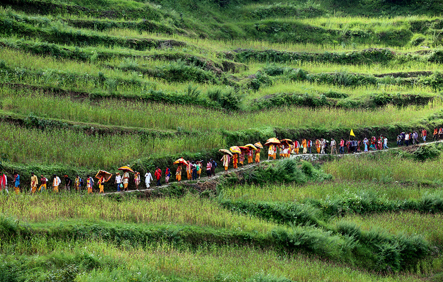

METHOD OF CONSERVATION

Biodiversity and its Conservation Methods
There are a number of different methods that can be used to help conserve biodiversity. Some of the most common methods include:
- Preserving Habitats: One of the most important things that can be done to help conserve biodiversity is to protect the habitats that are home to various species. This can be done through the establishment of protected areas, such as national parks and nature reserves.
- Restoring Habitats: Another way to help conserve biodiversity is to restore degraded habitats. This can involve things such as planting new trees and restoring wetlands.
- Reducing Habitat Destruction: Habitat destruction is one of the biggest threats to biodiversity. Reducing the amount of habitat destruction can help to conserve the species that live in those habitats.
- Promoting Sustainable Use of Resources: Sustainable use of resources is another important way to help conserve biodiversity. This includes things such as using resources in a way that does not harm the environment and does not reduce the availability of those resources in the future.
- Educating the Public: Educating the public about the importance of biodiversity and the threats that it faces is another important way to help conserve it. This can involve things such as providing information about the different species that exist and the habitats that they live in.
IN-SITU CONSERVATION
In-situ conservation of biodiversity is the conservation of species within their natural habitat.
In this method, the natural ecosystem is maintained and protected.
The in-situ conservation has several advantages. Following are the important advantages of in-situ conservation:
- It is a cost-effective and convenient method of conserving biodiversity.
- A large number of living organisms can be conserved simultaneously.
- Since the organisms are in a natural ecosystem, they can evolve better and can easily adjust to different environmental conditions.
Certain protected areas where in-situ conservation takes place include national parks, wildlife sanctuaries and biosphere reserves.
- National Parks
These are limited reserves maintained by the government for the conservation of wildlife as well as the environment. Human activities are prohibited in national parks and they are solely dedicated to the protection of natural fauna of the area. They mostly occupy an area of 100-500 square km. There are a total of 104 national parks in India, right now.
The national parks may even be within a biosphere reserve. These are small reserves that are protected and maintained by the government. Its boundaries are well protected,
where human activities such as grazing, forestry, habitat, and cultivation are restricted.
Example- Kanha National Park, Gir National Park, Kaziranga National Park, and so on.


- Wildlife Sanctuaries
Wildlife Sanctuaries are protected areas meant only for the conservation of wild animals. A few human activities such as cultivation, wood collection, and other forest product collection are allowed here, but they must not interfere with the conservation of the animals. Tourist visits are also allowed in these areas. There are a total of 551 wildlife sanctuaries in India.
These are the places where only wild animals can be found. Certain human activities like timber harvesting, cultivation, collection of woods, and other forest products are
permitted unless they interfere with the conservation project. Recreation tourism is also permitted.
Example- Ghana Bird Sanctuary, Abohar Wildlife Sanctuary, Mudumalai Wildlife Sanctuary, etc.

- Biosphere reserves
- Biosphere reserves (Biosphere Reserves in India)are sites established by countries to protect and preserve them. Biosphere reserves in India were first notified by the Indian government, and Later Some of them were recognized by UNESCO under UNESCO’s Man and the Biosphere (MAB) Programme to promote sustainable development based on local community efforts and sound science.
- UNESCO initiated the programme of Biosphere Reserve in 1971.
- The Objective of the formation of the biosphere reserves is to conserve in situ all forms of life, along with their support Platform, in totality. Hence, it May serves as a referral system for monitoring and evaluating changes in Organic ecosystems. The first biosphere reserve of the world was established in 1979;
- UNESCO definition of a Biosphere reserve
In 134 nations, there are 738 biosphere reserves, including 22 transboundary locations. They are allocated in the following manner:
- 90 Biosphere reserves in 33 countries in Africa
- 36 Biosphere reserves in 14 countries in the Arab States
- 172 Biosphere reserves in 24 countries in Asia & Pacific
- 308 Biosphere reserves in 41 countries in Europe & North America
- 132 Biosphere reserves in 22 countries in Latin America & Caribbean.
Example- Sundarban, Nanda Devi, Nokrek, and Manas in India.


EX-SITU CONSERVATION
Ex-situ conservation of biodiversity involves the breeding and maintenance of endangered species in
artificial ecosystems such as zoos, nurseries, botanical gardens, gene banks, etc. There is less competition for food, water and space among the organisms.
Ex-situ conservation has the following advantages:
- The animals are provided with a longer time and breeding activity.
- The species bred in captivity can be reintroduced in the wild.
- Genetic techniques can be used for the preservation of endangered species.
Advantages of Ex Situ Conservation Include
The main advantage of ex situ conservation is that it allows for species to be preserved even when they are not found in the wild. This is important because it means that species that are on the brink of extinction can be saved. Additionally, ex situ conservation allows for researchers to study and learn more about threatened and endangered species.